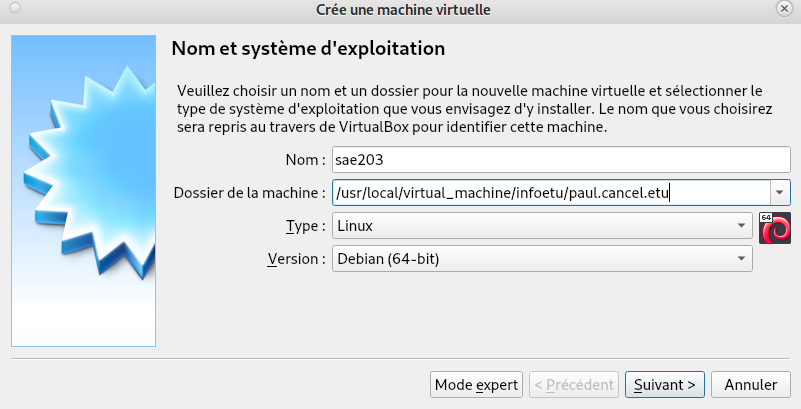
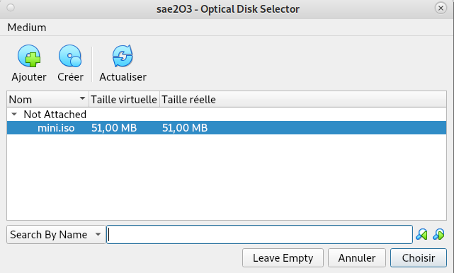
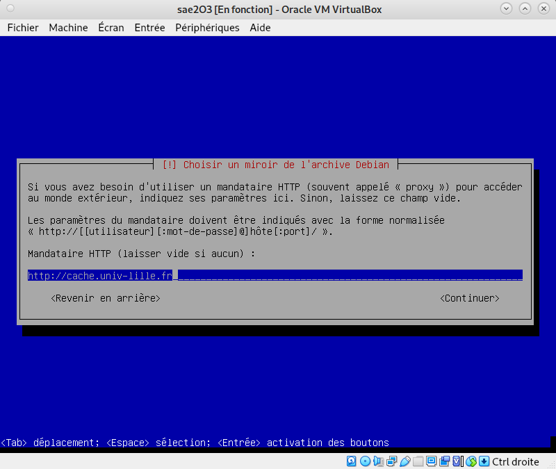
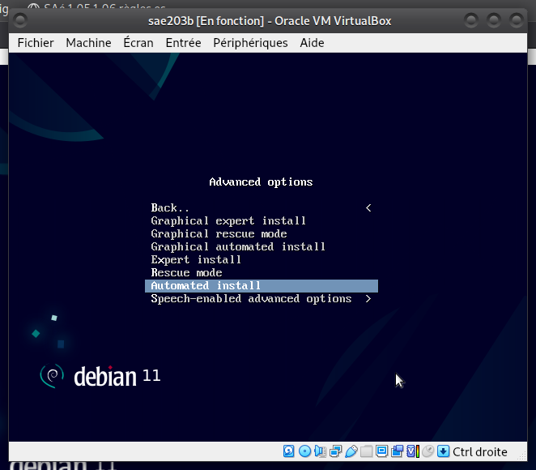
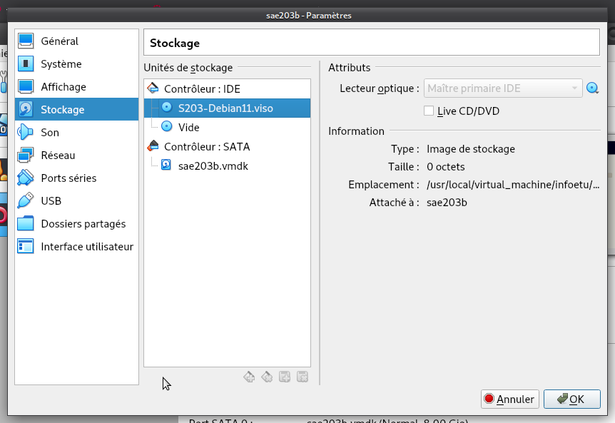
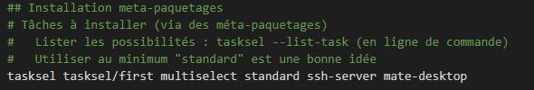
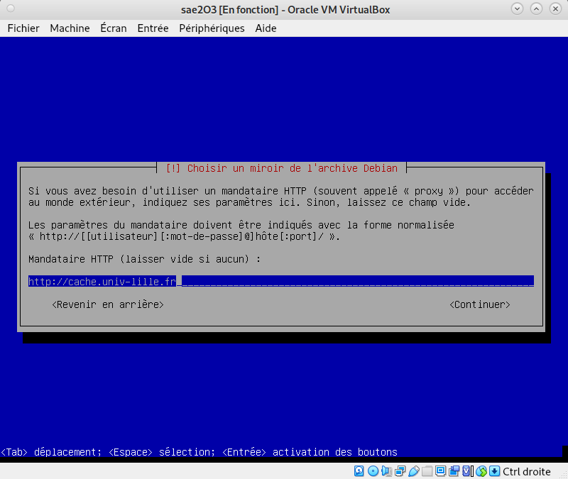

Utilisation du document Nextcloud sur le moodle pour s’inscrire en équipe de 3 personnes avant de commencer à réaliser le projet.
2) Préparation d’une machine virtuelle
Création d’une machine virtuelle Debian 11 à partir du logiciel Virtualbox avec un environnement MATE et 2 utilisateurs (root et user) ainsi que quelque logiciels.
2.1) Prérequis concernant la machine physique
4 Go de RAM minimum
20 Go d’espace disque ou plus
VirtualBox installé avec son «extension pack» (VBoxGuestAddition.iso) sur la machine hôte.
2.2) Création machine virtuelle
Après avoir lancé Virtualbox, il faut en respectant les caractéristiques ci dessous :
Nom de la machine dans VirtualBox : sae203
Dossier de la machine : /usr/local/virtual_machine/infoetu/login
Bien entendu, login est à remplacer par votre login.
Type : Linux
Version : Debian ou Debian 11 en 64-bit
Mémoire vive (RAM) : 2048 Mo pour être à l’aise à l’usage.
Disque dur : 20 Go entier (une seule partition)
Laisser le reste par défaut.

Questions : Création machine virtuelle
####Que signifie “64-bit” dans “Debian 64-bit” ?
Debian est codé sur Un processeur 64 bits est un microprocesseur dans lequelle
la taille d'un mot machine est de 64 bits.
####Quelle est la configuration réseau utilisée par défaut ?
C’est Dynamic Host Configuration Protocol (DHCP) qui est utilisée par défaut.
####Quel est le nom du fichier XML contenant la configuration de votre machine ?
Le nom du fichier XML contenant la configuration de la machine est sae203.vbox.
####Sauriez-vous modifier directement ce fichier pour mettre 2 processeurs à votre machine ?
Oui, il suffit de modifier la ligne CPU count à 2 dans le fichier XML de la machine.
2.3) Installation de l’OS
Pour l’installation classique, on utilisera un fichier iso bootable d’une installation de “Debian 11” que l’on pourra retrouver sur le site officiel de Debian (≈400Mo).
On va donc insérer le fichier iso d’installation dans le lecteur de la machine virtuelle déja disponible sur l’interface Virtualbox
ImageIso
Maintenant on allume la machine virtuelle et on commence l’installation en avec les informations ci-dessous :
Nom de la machine (à l’installation) : serveur
Domaine : Laisser vide
Pays/langue : France
Miroir : http://debian.polytech-lille.fr
Proxy si nécessaire : http://cache.univ-lille.fr:3128
Compte administrateur : root / root
Un Compte utilisateur : User / user / user
Partition : 1 seule partition recouvrant le disque entier
Sélection des logiciels de démarrage (Paquetages logiciels à préinstaller pour se simplifier la vie par la suite) :
environnement de bureau Debian
… MATE (penser à décocher Gnome)
serveur web
serveur ssh
utilitaire usuels du système

Questions : Installation OS de base
####Qu’est-ce qu’un fichier iso bootable ?
Un fichier iso bootable agit comme un disque bootable mais pour une
machine virtuelle pour installer l'OS. Avec la définition de bootable
ci dessous.
Au niveau des composants matériels, un serveur web est un ordinateur qui stocke
les fichiers qui composent un site web et qui les envoie à l'appareil de l'utilisateur
qui visite le site.
####Qu’est-ce qu’un serveur SSH ?
SSH, ou Secure Socket Shell, est un protocole réseau qui permet aux administrateurs
d'accéder à distance à un ordinateur. SSH désigne également l'ensemble des utilitaires qui
mettent en oeuvre le protocole.
Un serveur mandataire est un programme qui joue le rôle d'intermédiaire entre un
ordinateur et un réseau. Il transfère la demande de votre ordinateur vers le site cible
en utilisant sa propre adresse IP.
3) Préparation du système
Nous allons maintenant préparer le système pour faciliter l’utilisation de la machine virtuelle.
On commence par passer en mode console avec la séquence de touche Ctrl + Alt + F1
On se connecte en tant que root : login = rootpassword = root
On entre la commande “usermod -aG sudo user” pour ajouter les droits sudo à user
Questions : sudo
Comment peux-ton savoir à quels groupes appartient l’utilisateur user ?
Il faut utiliser la commande "groups user" pour voir les groupes dont user fait partie,
y compris le groupe sudo.
ImageGroupes
3.2) Installation des suppléments invités
Maintenant nous allons ajouter les suppléments invités à notre machine virtuelle.
On insère le cd des suppléments :
Périphériques > Insérer l'image des CD des additions invité
CaptureCdInvité
On monte le CD avec la commande suivante :
sudo mount /dev/cdrom /mnt
On installe les suppléments avec la commande suivante :
sudo /mnt/VBoxLinuxAdditions.run
On relance la machine puis on se connecte à user.
Questions : Suppléments invités
Quel est la version du noyau Linux utilisé par votre VM ?
Avec la commande “cat /proc/version” on obtient 5.10.0-21-amd64.
À quoi servent les suppléments invités ? Donner 2 principales raisons de les installer.
Les additions invité sont une collection de pilotes de périphériques et d'applications
système pour VirtualBox qui améliorent les performances du système d'exploitation
invité et permettent une meilleure interaction entre la machine hôte et la machine invité.
À quoi sert la commande mount (dans notre cas de figure et dans le cas général) ?
La commande "mount" sert à monter le disques dur, dans notre cas, cela sert à lancer
VBoxLinuxAdditions.run pour les suppléments invité.
ImageMount
3.3) Précision sur le Proxy
Un “proxy” ou “serveur mandataire” est un serveur relais, qui joue le rôle d’intermédiaire entre deux hôtes sur Internet.
Au sein de l’université il faut utiliser un proxy pour pouvoir accéder à internet depuis la machine virtuelle. En l’occurence le proxy pourr http et https pour l’université est “http://cache.univ-lille.fr:3128”.
Si on veut éviter de devoir le reconfigurer à chaque fois qu’on relance un terminal on peut mettre ces 2 lignes dans le fichier $HOME/.bashrc.
Pour désactiver le proxy on peut utiliser la commande : unset http_proxy
On peut également configurer le proxy via l’interface MATE dans :
“Système › Préférences › Internet et réseau › Serveur mandataire” puis on y mets la même URL pour HTTP et HTTPS.
Semaine 7 : Balisage léger
Résumé :
Quelques liens pour apprendre à utiliser Markdown et Asciidoc, ainsi que les exportations vers d’autres formats avec des outils tels que pandoc (docx, pdf, html…).
1) Les outils d’édition
On peut utiliser un simple éditeur de texte.
On fera les conversions avec les outils :
pandoc (pour Markdown)
asciidoctor & asciidoctor-pdf (pour Asciidoc).
Un simple terminal et la bonne commande en ligne de commande seront suffisant pour générer le rapports.
On peut également utiliser des éditeurs en lignes tels que stackedit ou dillinger pour Markdown ou encore AsciidocLive pour Asciidoc.
2) Markdown
Markdown est un format texte à balisage léger créé parr Jhon Gruber et Aaron Schwartz (http://www.aaronsw.com/) en 2004.
L’outil initial est en lui même parfois assez limité et c’est pourquoi il existe de nombreuses extensions telles que :
Le convertisseur Asciidoctor est le convertisseur à utiliser pour convertir le format Asciidoc (.adoc) en html. Et Asciidoctor-pdf est celui à utiliser pour les conversion en pdf.
Comme Asciidoc est plus complet que Markdown il n’y aura pas besoin d’extensions comme pandoc pour faire un rapport.
Semaine 9 : Installation Debian automatisée
1) A propos de Debian
1.1) Documentations
La distribution Debian propose une documentation très complète au travers de son guide utilisateur, traduit dans de nombreuses langues.
Questions : Debian
1. Qu’est-ce que le Projet Debian ? D’où vient le nom Debian ?
Le projet Debian est une association d'individus qui ont pour
cause commune de créer un système d'exploitation libre.
Le nom Debian est tiré du créateur Ian Murdock et de son épouse
Debra Murdock. (Deb+Ian)
2. Il existe 3 durées de prise en charge (support) de ces versions :
La durée minimale, la durée en support long terme (LTS) et la durée en support long terme étendue (ELTS).
Quelle sont les durées de ces prises en charge ?
La durée minimale est de 2 ans, celle du support long terme LTS est 5 ans et
celle étendue est de 5 ans de plus donc 10 ans.
5. Chaque distribution majeur possède un nom de code différent. Par exemple, la version majeur actuelle (Debian 11) se nomme Bullseye. D’où viennent les noms de code données aux distributions ?
Les noms des versions de Debian viennent d'une inspiration des films d'animations Pixar.
En effet Bullseye est le nom du cheval de Woody dans Toy Story 2.
6. L’un des atouts de Debian fut le nombre d’architecture (≈ processeurs) officiellement prises en charge. Combien et lesquelles sont prises en charge par la version Bullseye ?
Il y a 8 architectures qui sont prises en charges par Debian : AMD64 & Intel 64, Intel x86-based,
ARM, ARM avec matériel FPU, ARM 64 bits, MIPS 64 bits (petit-boutien), MIPS 32 bits (petit-boutien),
Power Systems, IBM S/390 64 bits.
- Quelle a était le premier nom de code utilisé ?
Le premier nom de code était Buzz.
- Quand a-t-il été annoncé ?
Le 17 juin 1996.
- Quelle était le numéro de version de cette distribution ?
Debian 1.1
- Quel est le dernier nom de code annoncé à ce jour ?
Le dernier nom de code annoncé est Bullseye
- Quand a-t-il été annoncé ?
Le 14 août 2021.
- Quelle est la version de cette distribution ?
Debian 11.0
Même si il existe sur l’image iso que nous avons déja utilisé une option avancée pour automatiser l’installation, celle ci reste limitée puisqu’elle entre uniquement les options par défaut.
ImageAutomated
Si nous voulons utiliser des paramètres différents de ceux de bases il faudra que nous utilisions un fichier .viso personnalisé avec les options que l’on veut avoir.
On va maintenant procéder à la création d’une nouvelle machine qu’on appellera sae203b via l’interface Virtualbox.
On insèrera le fichier “SAE203-Debian.viso” dans le lecteur optique de la machine virtuelle avec les paramètres que nous avons de base dans l’archive “autoinstall.zip” disponible sur le moodle.
Pour éditer les paramètres de préconfiguration, nous irons mofidier le fichier “preseed.cfg” qui liste l’ensemble des informations et actions à faire automatiquement lors de l’installation.
Fichiers de pré-configuration + On récupère l’archive “autoinstall.zip” sur le moodle et on la décompresse dans le répertoire /usr/local/virtualmachine/infoetu/_login_/sae203b en remplaçant login par notre login.
On se place dans le répertoire puis on éxécute cette commande :
sed -i -E "s/(--iprt-iso-maker-file-marker-bourne-sh).*$/\1=$(cat
/proc/sys/kernel/random/uuid)/" S203-Debian11.viso
On insère le fichier viso dans le lecteur de la machine virtuelle
ImageViso
On démarre la machine virtuelle et on attend que l’installation se termine (≈5-10min)
ImageAutoInstall
On obtient une installation sans interface graphique. Ce que la commande tasksel pourrait corriger mais ce ne serait pas 100% automatisé.
Questions : Pré-Installation
Ajustement de la pré-configuration :
Ajouter le droits sudo à user
Installer l’environnement MATE
Installer les paquets : sudo, git, sqlite3, curl, bash-completion, neofetch.
On rajoute mate-desktop dans la partie tasksel du preseed.
ImageMate
Et on rajoute ces lignes en bas du fichier de preseed.
ImageCommande
Semaine 10 & 11 : Gitea
1) Préliminaire
Nous considérons que les étapes précédentes sont réalisées. Nous avons donc une machine virtuelle avec une Debian 11.6 avec au moins mate-desktop, git, et sqlite3 installés (et quelques autres paquets).
1.1) Configuration globale de git
Nous allons maintenant configurer quelque paramètres pour le logiciel git
On éxécute les commandes suivante dans un terminal (en remplaçant les informations évidemment) :
On éxécute ensuite cette commande pour installer le paquet git-gui :
sudo apt install git-gui
Questions : Préliminaire
Qu’est-ce que le logiciel git-gui ? Comment se lance-t-il ?
Git Gui est l'interface graphique d'un outil en ligne de commande. De ce fait, toutes
les possibilités offertes par Git ne sont pas disponibles dans Git Gui.
On peut l'executer avec la commande "git gui &"
ImageGitGui
Qu’est-ce que le logiciel gitk ? Comment se lance-t-il ?
gitk est un navigateur de dépôt graphique, le premier de son genre. Il peut être
considéré comme un encapsuleur graphique pour git log.
Il permet d'explorer et de visualiser l'historique d'un dépôt.
Il est écrit en tcl/tk, ce qui le rend portable sur tous les
systèmes d'exploitation.
On peut y accéder en tapant "gitk &" dans le terminal.
ImageGitk
Quelle sera la ligne de commande git pour utiliser par défaut le proxy de l’université sur tous vos projets git ?
Avant de se lancer dans l’installation de Gitea proprement dites, vous aurez besoin d’ouvrir des ports d’accès sur votre machine virtuelle.
Le service Gitea est un service web et utilise par défaut sur le port 3000 de la machine sur lequel il est démarré. Il n’est donc pas nécessaire d’être root pour le démarrer (mais il faut être root pour l’installer).
Le mode réseau par défaut de notre machine virtuelle est le mode NAT. Il permet de faire la redirection dont nous avons besoins ici. On modifiera donc comme ci dessous dans
Gitea est une forge logicielle libre en Go sous licence MIT, pour l'hébergement
de développement logiciel, basé sur le logiciel de gestion de versions Git pour
la gestion du code source.
À quels logiciels bien connus dans ce domaine peut-on le comparer (en citer au moins 2) ?
On peut le comparer à Github et à Gitlab notamment.
Vu qu’il n’existe pas de paquet Debian pour l’installation de Gitea, l’installation sera légèrement plus compliquée que pour d’autres paquets. Néanmoins l’installation reste simple si on suit correctement la documentation.
Les codes sources de TP et Projets dans les ressources de développement :
Normalement cela serait les même commandes que pour les rapports mais en
l'occurence ces fichiers sont déja dans un dépôt git avec une association avec
Gitlab et donc cela engendrerait un conflit.
Questions : Projets existants
Que se passe-t-il ? Qu’elle semble en être la cause ? Comment corriger ce problème ?
Une erreur se produit et un conflit entre Gitlab et Gitea semble en être la cause.



Markdown et
Asciidoc, ainsi que les exportations vers d’autres formats avec des outils tels que pandoc (docx, pdf, html…).